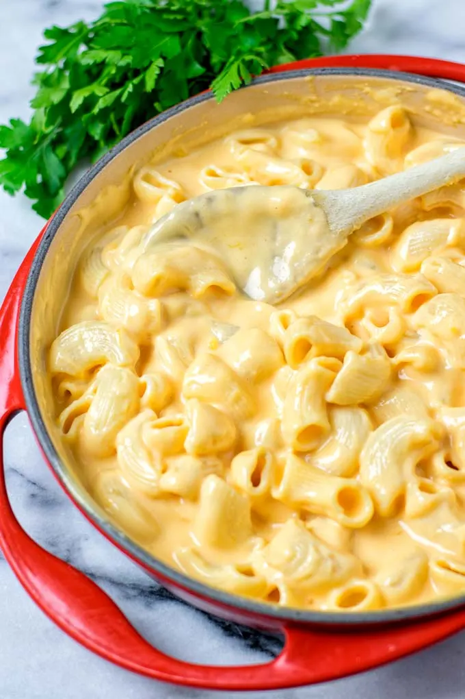

Mac 'n Chz

A creamy baked vegan mac and cheese that has deceived many a dairy devotee with its surprising secret sauce...!
Makes 6-8 servings
Set a large pot of salted water to boil for the pasta. Cook until al dente and set aside:
- 16 oz macaroni noodles, elbows or shells
While the pasta water comes to a boil, add the following ingredients to another smaller pot and also bring to a boil. Then lower the heat to medium-low and simmer for 15-20 minutes until soft:
- 2 cups peeled yukon gold potatoes
- 3/4 cup diced yellow or white onion
- 1/2 cup peeled & chopped carrot
- 1/2 cup raw cashews, pieces or whole
- 2 cups water
Set oven to 350°.
Add the following ingredients to a blender. Once the veggies and cashews are soft, add them and their water to the blender as well and blend to a thick and creamy sauce. Adjust seasoning to taste:
- 1 stick vegan butter
- 1-2 cloves garlic
- 2 tbsp lemon juice
- 1/2 tsp dijon mustard
- 1 tbsp sea salt
- 1/2 tsp black pepper
- a pinch of cayenne
Combine noodles and sauce and add to a 16 x 8 baking dish and bake for 30 minutes.
Serve right away, or let it cool 10 minutes to firm up a bit. Don't tell them it's vegan and wait for their reaction! Enjoy!